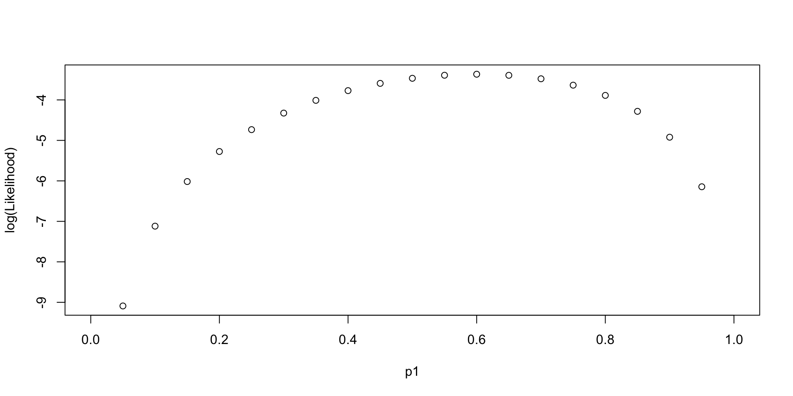
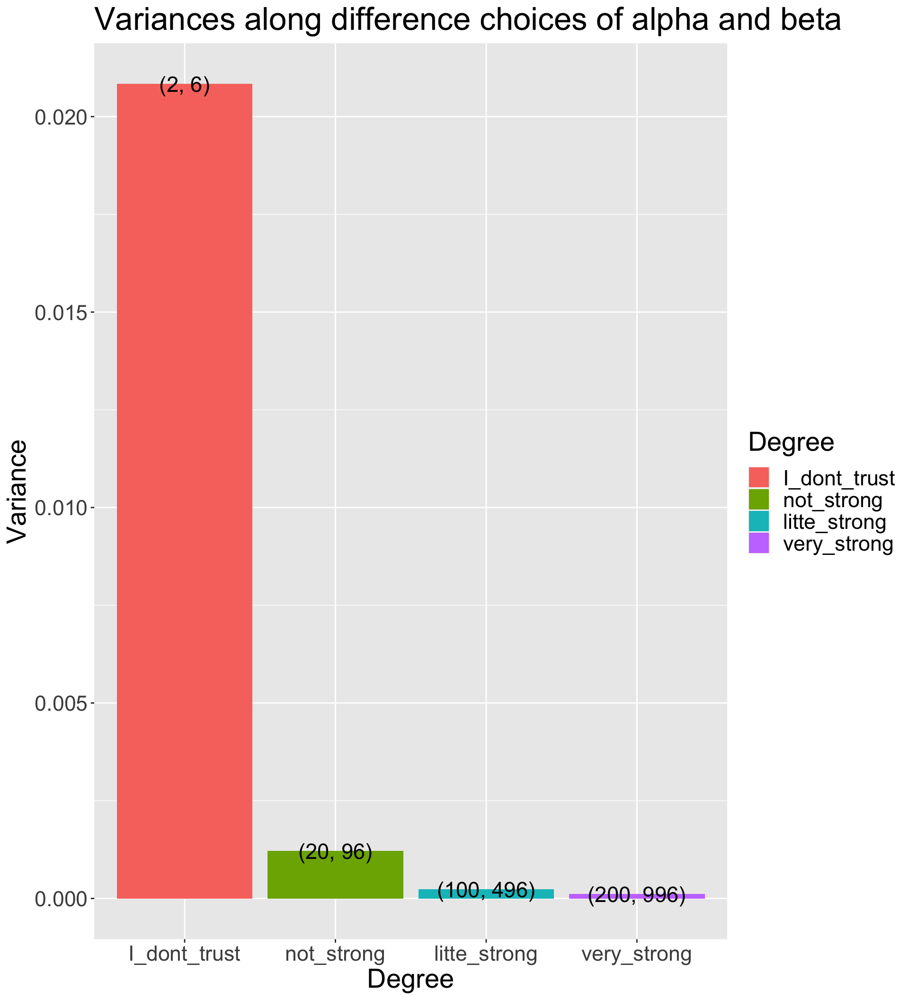

[1] 0.6Lecture 02
Introduction to Bayesian Concepts
Jihong Zhang
Educational Statistics and Research Methods
Today’s Lecture Objectives
Bayes’ Theorem
Likelihood function, Posterior distribution
How to report posterior distribution of parameters
Bayesian update
but, before we begin… Music: Good Bayesian
Quiz: What is Bayesian?
What are key components of Bayesian models?
- Likelihood function - data
- Prior distribution - belief / previous evidences of parameters
- Posterior distribution - updated information of parameters given our data and model
- Posterior predictive distribution - future / predicted data
What are the differences between Bayesian with Frequentist analysis?
- prior distribution: Bayesian
- hypothesis of fixed parameters: frequentist
- estimation process: MCMC vs. MLE
- posterior distribution vs. point estimates of parameters
- credible interval (plausibility of the parameters having those values) vs. confidence interval (the proportion of infinite samples having the fixed parameters)
Bayes’ Theorem: How Bayesian Statistics Work
Bayesian methods rely on Bayes’ Theorem
\[ P(\theta | Data) = \frac{P(Data|\theta)P(\theta)}{P(Data)} \propto P(Data|\theta) P(\theta) \]
Where:
- P: probability distribution function (PDF)
- \(P(\theta|Data)\) : the posterior distribution of parameter \(\theta\), given the observed data
- \(P(Data|\theta)\): the likelihood function (conditional distributin) of the observed data, given the parameters
- \(P(\theta)\): the prior distribution of parameter \(\theta\)
- \(P(Data)\): the marginal distribution of the observed data
A Live Bayesian Example
Suppose we want to assess the probability of rolling a “1” on a six-sided die:
\[ \theta \equiv p_{1} = P(D = 1) \]
Suppose we collect a sample of data (N = 5):
\[Data \equiv X = \{0, 1, 0, 1, 1\}\]The prior distribution of parameters is denoted as \(P(p_1)\) ;
The likelihood functionis denoted as \(P(X | p_1)\);
The posterior distribution is denoted as \(P(p_1|X)\)
Then we have:
\[ P(p_1|X) = \frac{P(X|p_1)P(p_1)}{P(X)} \propto P(X|p_1) P(p_1) \]
Step 1: Choose the Likelihood function (Model)
The Likelihood function \(P(X|p_1)\) follows Binomial distribution of 3 succuess out of 5 samples:
\[P(X|p_1) = \prod_{i =1}^{N=5} p_1^{X_i}(1-p_1)^{X_i} \\= (1-p_i) \cdot p_i \cdot (1-p_i) \cdot p_i \cdot p_i\]Question here: WHY use Bernoulli (Binomial) Distribution (feat. Jacob Bernoulli, 1654-1705)?
My answer: Bernoulli dist. has nice statistical probability. “Nice” means making totally sense in normal life– a common belief. For example, the \(p_1\) value that maximizes the Bernoulli-based likelihood function is \(Mean(X)\), and the \(p_1\) values that minimizes the Bernoulli-based likelihood function is 0 or 1
Log-likelihood Function along “Parameter”
\[ LL(p_1|\{0, 1, 0, 1, 1\}) \]
Log-likelihood Function along “Data”
\[ LL(Data|p_1 \in \{0, 0.2,0.4, 0.6, 0.8,1\}) \]
Code
library(tidyverse)
p1 = c(0, 2, 4, 6, 8, 10) / 10
nTrails = 5
nSuccess = 0:nTrails
Likelihood = sapply(p1, \(x) choose(nTrails,nSuccess)*(x)^nSuccess*(1-x)^(nTrails - nSuccess))
Likelihood_forPlot <- as.data.frame(Likelihood)
colnames(Likelihood_forPlot) <- p1
Likelihood_forPlot$Sample = factor(paste0(nSuccess, " out of ", nTrails), levels = paste0(nSuccess, " out of ", nTrails))
# plot
Likelihood_forPlot %>%
pivot_longer(-Sample, names_to = "p1") %>%
mutate(`log(Likelihood)` = log(value)) %>%
ggplot(aes(x = Sample, y = `log(Likelihood)`, color = p1)) +
geom_point(size = 2) +
geom_path(aes(group=p1), size = 1.3)Step 2: Choose the Prior Distribution for \(p_1\)
We must now pick the prior distribution of \(p_1\):
\[ P(p_1) \]
Compared to likelihood function, we have much more choices. Many distributions to choose from
To choose prior distribution, think about what we know about a “fair” die.
the probability of rolling a “1” is about \(\frac{1}{6}\)
the probabilities much higher/lower than \(\frac{1}{6}\) are very unlikely
Let’s consider a Beta distribution:
\[ p_1 \sim Beta(\alpha, \beta) \]
The Beta Distribution
For parameters that range between 0 and 1, the beta distribution makes a good choice for prior distribution:
\[ P(p_1) = \frac{(p_1)^{a-1} (1-p_1)^{\beta-1}}{B(\alpha,\beta)} \]
Where denominator \(B\) is:
\[ B(\alpha,\beta) = \frac{\Gamma(\alpha)\Gamma(\beta)}{\Gamma(\alpha+\beta)} \]
and (fun fact: derived by Daniel Bernoulli (1700-1782)),
\[ \Gamma(\alpha) = \int_0^{\infty}t^{\alpha-1}e^{-t}dt \]
More Beta Distribution
The Beta distribution has a mean of \(\frac{\alpha}{\alpha+\beta}\) and a mode of \(\frac{\alpha -1}{\alpha + \beta -2}\) for \(\alpha > 1\) & \(\beta > 1\); (fun fact: when \(\alpha\ \&\ \beta< 1\), pdf is U-shape, what that mean?)
\(\alpha\) and \(\beta\) are called hyperparameters of the parameter \(p_1\);
Hyperparameters are parameters of prior parameters ;
When \(\alpha = \beta = 1\), the distribution is uniform distribution;
To make sure \(P(p_1 = \frac{1}{6})\) is the largest, we can:
Many choices: \(\alpha =2\) and \(\beta = 6\) has the same mode as \(\alpha = 100\) and \(\beta = 496\); (hint: \(\beta = 5\alpha - 4\))
The differences between choices is how strongly we feel in our beliefs
How strongly we believe in the prior
- The Beta distribution has a variance of \(\frac{\alpha\beta}{(\alpha+\beta)^2 (\alpha + \beta + 1)}\)
- The smaller prior variance means the prior is more informative
- Informative priors are those that have relatively small variances
- Uninformative priors are those that have relatively large variances
- Suppose we have four sets of hyperparameters choices: (2,6);(20,96);(100,496);(200,996)
Code
# Function for variance of Beta distribution
varianceFun = function(alpha_beta){
alpha = alpha_beta[1]
beta = alpha_beta[2]
return((alpha * beta)/((alpha + beta)^2*(alpha + beta + 1)))
}
# Multiple prior choices from uninformative to informative
alpha_beta_choices = list(
I_dont_trust = c(2, 6),
not_strong = c(20, 96),
litte_strong = c(100, 496),
very_strong = c(200, 996))
## Transform to data.frame for plot
alpha_beta_variance_plot <- t(sapply(alpha_beta_choices, varianceFun)) %>%
as.data.frame() %>%
pivot_longer(everything(), names_to = "Degree", values_to = "Variance") %>%
mutate(Degree = factor(Degree, levels = unique(Degree))) %>%
mutate(Alpha_Beta = c(
"(2, 6)",
"(20, 96)",
"(100, 496)",
"(200, 996)"
))
alpha_beta_variance_plot %>%
ggplot(aes(x = Degree, y = Variance)) +
geom_col(aes(fill = Degree)) +
geom_text(aes(label = Alpha_Beta), size = 6) +
labs(title = "Variances along difference choices of alpha and beta") +
theme(text = element_text(size = 21)) 
Visualize prior distribution \(P(p_1)\)
Code
dbeta <- function(p1, alpha, beta) {
# probability density function
PDF = ((p1)^(alpha-1)*(1-p1)^(beta-1)) / beta(alpha, beta)
return(PDF)
}
condition <- data.frame(
alpha = c(2, 20, 100, 200),
beta = c(6, 96, 496, 996)
)
pdf_bycond <- condition %>%
nest_by(alpha, beta) %>%
mutate(data = list(
dbeta(p1 = (1:99)/100, alpha = alpha, beta = beta)
))
## prepare data for plotting pdf by conditions
pdf_forplot <- Reduce(cbind, pdf_bycond$data) %>%
t() %>%
as.data.frame() ## merge conditions together
colnames(pdf_forplot) <- (1:99)/100 # add p1 values as x-axis
pdf_forplot <- pdf_forplot %>%
mutate(Alpha_Beta = c( # add alpha_beta conditions as colors
"(2, 6)",
"(20, 96)",
"(100, 496)",
"(200, 996)"
)) %>%
pivot_longer(-Alpha_Beta, names_to = 'p1', values_to = 'pdf') %>%
mutate(p1 = as.numeric(p1),
Alpha_Beta = factor(Alpha_Beta,levels = unique(Alpha_Beta)))
pdf_forplot %>%
ggplot() +
geom_vline(xintercept = 0.17, col = "black") +
geom_point(aes(x = p1, y = pdf, col = Alpha_Beta)) +
geom_path(aes(x = p1, y = pdf, col = Alpha_Beta, group = Alpha_Beta)) +
scale_color_discrete(name = "Prior choices")Question: WHY NOT USE NORMAL DISTRIBUTION?
Step 3: The Posterior Distribution
Choose a Beta distribution as the prior distribution of \(p_1\) is very convenient:
When combined with Bernoulli (Binomial) data likelihood, the posterior distribution (\(P(p_1|Data)\)) can be derived analytically
The posterior distribution is also a Beta distribution
\(\alpha' = \alpha + \sum_{i=1}^{N}X_i\) (\(\alpha'\) is parameter of the posterior distribution)
\(\beta' = \beta + (N - \sum_{i=1}^{N}X_i)\) (\(\beta'\) is parameter of the posterior distribution)
The Beta distribution is said to be a conjugate prior in Bayesian analysis: A prior distribution that leads to posterior distribution of the same family
- Prior and Posterior distribution are all Beta distribution
Visualize the posterior distribution \(P(p_1|Data)\)
Code
dbeta_posterior <- function(p1, alpha, beta, data) {
alpha_new = alpha + sum(data)
beta_new = beta + (length(data) - sum(data) )
# probability density function
PDF = ((p1)^(alpha_new-1)*(1-p1)^(beta_new-1)) / beta(alpha_new, beta_new)
return(PDF)
}
# Observed data
dat = c(0, 1, 0, 1, 1)
condition <- data.frame(
alpha = c(2, 20, 100, 200),
beta = c(6, 96, 496, 996)
)
pdf_posterior_bycond <- condition %>%
nest_by(alpha, beta) %>%
mutate(data = list(
dbeta_posterior(p1 = (1:99)/100, alpha = alpha, beta = beta,
data = dat)
))
## prepare data for plotting pdf by conditions
pdf_posterior_forplot <- Reduce(cbind, pdf_posterior_bycond$data) %>%
t() %>%
as.data.frame() ## merge conditions together
colnames(pdf_posterior_forplot) <- (1:99)/100 # add p1 values as x-axis
pdf_posterior_forplot <- pdf_posterior_forplot %>%
mutate(Alpha_Beta = c( # add alpha_beta conditions as colors
"(2, 6)",
"(20, 96)",
"(100, 496)",
"(200, 996)"
)) %>%
pivot_longer(-Alpha_Beta, names_to = 'p1', values_to = 'pdf') %>%
mutate(p1 = as.numeric(p1),
Alpha_Beta = factor(Alpha_Beta,levels = unique(Alpha_Beta)))
pdf_posterior_forplot %>%
ggplot() +
geom_vline(xintercept = 0.17, col = "black") +
geom_point(aes(x = p1, y = pdf, col = Alpha_Beta)) +
geom_path(aes(x = p1, y = pdf, col = Alpha_Beta, group = Alpha_Beta)) +
scale_color_discrete(name = "Prior choices") +
labs( y = '')Manually calculate summaries of the posterior distribution
To determine the estimate of \(p_1\), we need to summarize the posterior distribution:
With prior hyperparameters \(\alpha = 2\) and \(\beta = 6\):
\(\hat p_1 = \frac{2+3}{2+3+6+2}=\frac{5}{13} = .3846\)
SD = 0.1300237
With prior hyperparameters \(\alpha = 100\) and \(\beta = 496\):
\(\hat p_1 = \frac{100+3}{100+3+496+2}=\frac{103}{601} = .1714\)
SD = 0.0153589
Stan Code for the example model
data {
int<lower=0> N; // sample size
array[N] int<lower=0, upper=1> y; // observed data
real<lower=1> alpha; // hyperparameter alpha
real<lower=1> beta; // hyperparameter beta
}
parameters {
real<lower=0,upper=1> p1; // parameters
}
model {
p1 ~ beta(alpha, beta); // prior distribution
for(n in 1:N){
y[n] ~ bernoulli(p1); // model
}
}Code
Running MCMC with 4 parallel chains...
Chain 1 Iteration: 1 / 2000 [ 0%] (Warmup)
Chain 1 Iteration: 1000 / 2000 [ 50%] (Warmup)
Chain 1 Iteration: 1001 / 2000 [ 50%] (Sampling)
Chain 1 Iteration: 2000 / 2000 [100%] (Sampling)
Chain 2 Iteration: 1 / 2000 [ 0%] (Warmup)
Chain 2 Iteration: 1000 / 2000 [ 50%] (Warmup)
Chain 2 Iteration: 1001 / 2000 [ 50%] (Sampling)
Chain 2 Iteration: 2000 / 2000 [100%] (Sampling)
Chain 3 Iteration: 1 / 2000 [ 0%] (Warmup)
Chain 3 Iteration: 1000 / 2000 [ 50%] (Warmup)
Chain 3 Iteration: 1001 / 2000 [ 50%] (Sampling)
Chain 3 Iteration: 2000 / 2000 [100%] (Sampling)
Chain 4 Iteration: 1 / 2000 [ 0%] (Warmup)
Chain 4 Iteration: 1000 / 2000 [ 50%] (Warmup)
Chain 4 Iteration: 1001 / 2000 [ 50%] (Sampling)
Chain 4 Iteration: 2000 / 2000 [100%] (Sampling)
Chain 1 finished in 0.0 seconds.
Chain 2 finished in 0.0 seconds.
Chain 3 finished in 0.0 seconds.
Chain 4 finished in 0.0 seconds.
All 4 chains finished successfully.
Mean chain execution time: 0.0 seconds.
Total execution time: 0.2 seconds.Code
Running MCMC with 4 parallel chains...
Chain 1 Iteration: 1 / 2000 [ 0%] (Warmup)
Chain 1 Iteration: 1000 / 2000 [ 50%] (Warmup)
Chain 1 Iteration: 1001 / 2000 [ 50%] (Sampling)
Chain 1 Iteration: 2000 / 2000 [100%] (Sampling)
Chain 2 Iteration: 1 / 2000 [ 0%] (Warmup)
Chain 2 Iteration: 1000 / 2000 [ 50%] (Warmup)
Chain 2 Iteration: 1001 / 2000 [ 50%] (Sampling)
Chain 2 Iteration: 2000 / 2000 [100%] (Sampling)
Chain 3 Iteration: 1 / 2000 [ 0%] (Warmup)
Chain 3 Iteration: 1000 / 2000 [ 50%] (Warmup)
Chain 3 Iteration: 1001 / 2000 [ 50%] (Sampling)
Chain 3 Iteration: 2000 / 2000 [100%] (Sampling)
Chain 4 Iteration: 1 / 2000 [ 0%] (Warmup)
Chain 4 Iteration: 1000 / 2000 [ 50%] (Warmup)
Chain 4 Iteration: 1001 / 2000 [ 50%] (Sampling)
Chain 4 Iteration: 2000 / 2000 [100%] (Sampling)
Chain 1 finished in 0.0 seconds.
Chain 2 finished in 0.0 seconds.
Chain 3 finished in 0.0 seconds.
Chain 4 finished in 0.0 seconds.
All 4 chains finished successfully.
Mean chain execution time: 0.0 seconds.
Total execution time: 0.2 seconds.Uninformative prior distribution (2, 6) and posterior distribution
Code
bayesplot::mcmc_dens(fit1$draws('p1')) +
geom_path(aes(x = p1, y = pdf), data = pdf_posterior_forplot %>% filter(Alpha_Beta == '(2, 6)'), col = "red") +
geom_vline(xintercept = 1/6, col = "green") +
geom_vline(xintercept = 3/5, col = "purple") +
labs(title = "Posterior distribution using uninformative prior vs. the conjugate prior (The Gibbs sampler) method", caption = 'Green: mode of prior distribution; Purple: expected value from observed data; Red: Gibbs sampling method')# A tibble: 2 × 10
variable mean median sd mad q5 q95 rhat ess_bulk ess_tail
<chr> <dbl> <dbl> <dbl> <dbl> <dbl> <dbl> <dbl> <dbl> <dbl>
1 lp__ -9.18 -8.90 0.735 0.325 -10.6 -8.66 1.00 1736. 2219.
2 p1 0.381 0.377 0.130 0.135 0.177 0.603 1.00 1499. 1691.Informative prior distribution (100, 496) and posterior distribution
Code
bayesplot::mcmc_dens(fit2$draws('p1')) +
geom_path(aes(x = p1, y = pdf), data = pdf_posterior_forplot %>% filter(Alpha_Beta == '(100, 496)'), col = "red") +
geom_vline(xintercept = 1/6, col = "green") +
geom_vline(xintercept = 3/5, col = "purple") +
labs(title = "Posterior distribution using informative prior vs. the conjugate prior (The Gibbs sampler) method", caption = 'Green: mode of prior distribution; Purple: expected value from observed data; Red: Gibbs sampling method')# A tibble: 2 × 10
variable mean median sd mad q5 q95 rhat ess_bulk
<chr> <dbl> <dbl> <dbl> <dbl> <dbl> <dbl> <dbl> <dbl>
1 lp__ -276. -276. 0.764 0.310 -277. -275. 1.00 1770.
2 p1 0.171 0.170 0.0155 0.0153 0.146 0.196 1.00 1527.
# ℹ 1 more variable: ess_tail <dbl>Install CmdStan
Next Class
We will talk more about how Bayesian model works. Thank you.
Bonus: Conjugacy of Beta Distribution
When the binomial likelihood is multiplied by the beta prior, the result is proportional to another beta distribution:
- \(\text{Posterior} \propto \theta^x (1 - \theta)^{n-x} \times \theta^{\alpha - 1} (1 - \theta)^{\beta - 1}\)
- Simplifies to: \(\theta^{x + \alpha - 1} (1 - \theta)^{n - x + \beta - 1}\)
This is the kernel of a beta distribution with updated parameters \(\alpha' = x + \alpha\) and \(\beta' = n - x + \beta\). The fact that the posterior is still a beta distribution is what makes the beta distribution a conjugate prior for the binomial likelihood.
Human langauge: Both beta (prior) and binomial (likelihood) are so-called “exponetial family”. The muliplication of them is still a “exponential family” distribution.
Bayesian updating
We can use the posterior distribution as a prior!
1. data {0, 1, 0, 1, 1} with the prior hyperparameter {2, 6} -> posterior parameter {5, 9}
2. new data {1, 1, 1, 1, 1} with the prior hyperparameter {5, 9} -> posterior parameter {10, 9}
3. one more new data {0, 0, 0, 0, 0} with the prior hyperparameter {10, 9} -> posterior parameter {10, 14}
Wrapping up
Today is a quick introduction to Bayesian Concept
- Bayes’ Theorem: Fundamental theorem of Bayesian Inference
- Prior distribution: What we know about the parameter before seeing the data
- hyperparameter: parameter of the prior distribution
- Uninformative prior: Prior distribution that does not convey any information about the parameter
- Informative prior: Prior distribution that conveys information about the parameter
- Conjugate prior: Prior distribution that makes the posterior distribution the same family as the prior distribution
- Likelihood: What the data tell us about the parameter
- Likelihood function: Probability of the data given the parameter
- Likelihood principle: All the information about the data is contained in the likelihood function
- Likelihood is a sort of “scientific judgment” on the generation process of the data
- Posterior distribution: What we know about the parameter after seeing the data